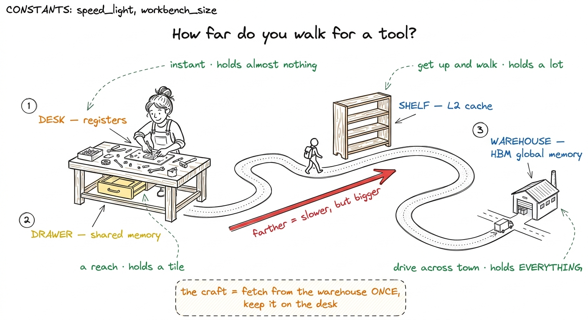
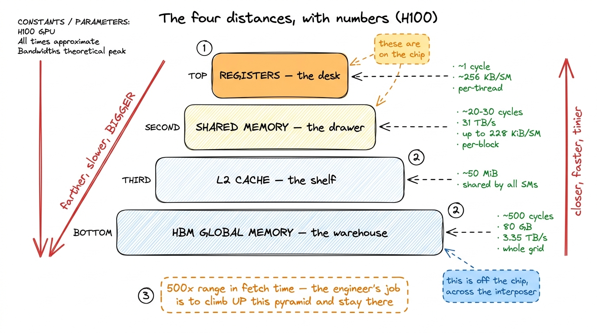
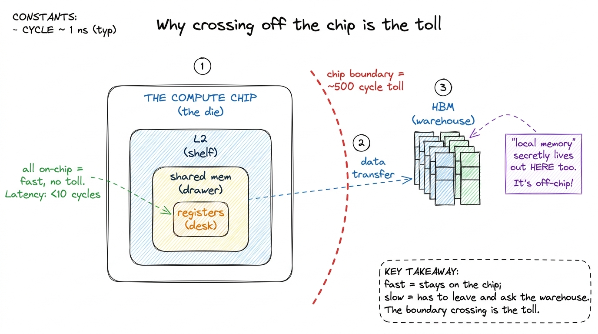
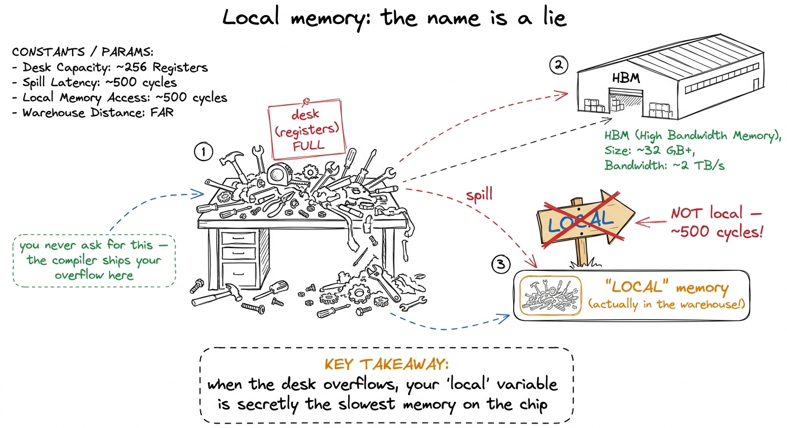
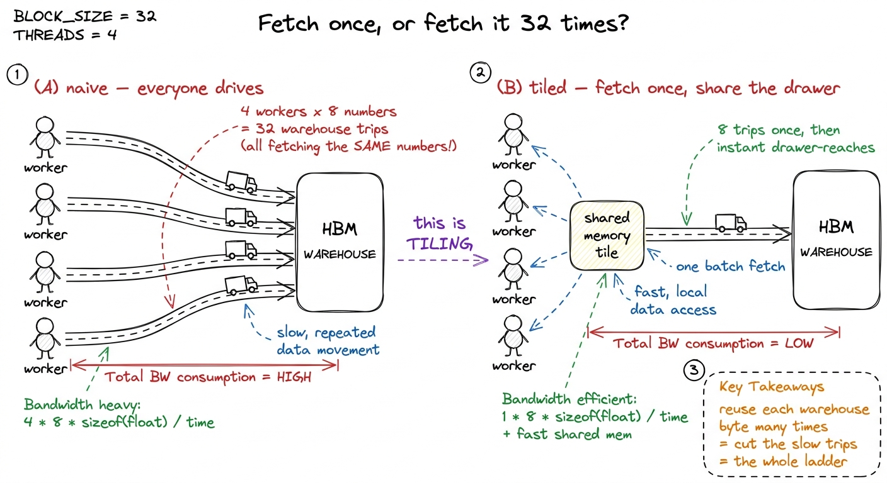
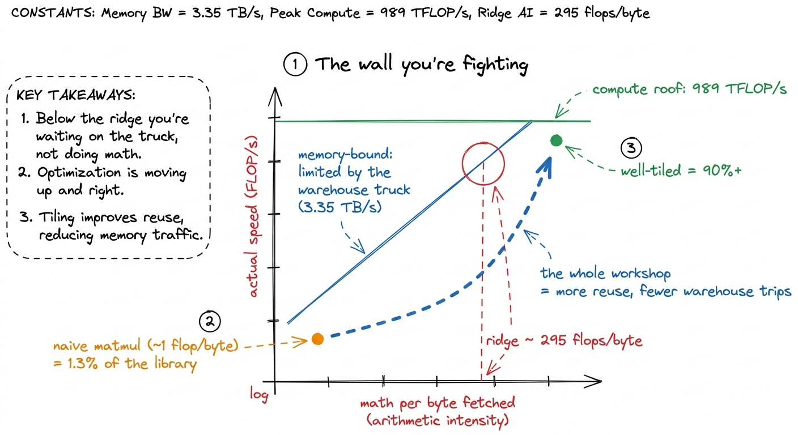

The memory hierarchy: your desk, drawers, shelves, warehouse
By the end of this chapter you'll be able to stand at a whiteboard and teach why the whole craft of kernel engineering is one thing: keeping the data you need close by. No electronics. No CUDA yet. Just a story about a workshop with a desk, some drawers, a shelf across the room, and a warehouse across town — and how far you have to walk to fetch a tool. Once a student feels those distances in their legs, every optimization we teach for the next four weeks becomes obvious. Let's build it.
The one idea, in plain words
A GPU does not have "memory." It has memories — several separate places to keep numbers, each a different distance away from where the actual math happens. The closest ones are tiny but instant. The far ones are huge but slow. And here is the whole game: the math units are so fast that they spend most of their time waiting for numbers to arrive. So the job — the entire job — is to keep the numbers you're about to use as close as possible.
That's it. That's the chapter. Everything else is putting distances on it.
The metaphor: your workshop and how far you walk
Picture yourself as a craftsperson building something at a workbench. When you need a tool, how long it takes to grab it depends entirely on where it is.
- On your desk, right under your hands: you grab it instantly. But your desk is tiny — a few tools fit, no more.
- In the drawer of your workbench: a step and a reach. A little slower, but the drawer holds a lot more than the desktop.
- On a shelf across the room: you get up and walk. Much slower. But the shelf is big — most of your tools live there.
- In the warehouse across town: you drive there and back. Painfully slow. But the warehouse is enormous — it holds everything, and it's the only place big enough to.
You'd never drive to the warehouse for a screwdriver you use every ten seconds. You'd walk it to your desk once and keep it there. That single instinct — fetch the far thing once, keep it near — is exactly what a good GPU kernel does.

figure rendering · The core metaphor: four distances you walk for one tool. Close is fastPut real numbers on the distances
Metaphors are for feeling; numbers are for believing. Here are the honest figures for an NVIDIA H100 — the GPU that's serving models right now. Don't make students memorize these. Make them feel the ratios.
- Registers (the desk): about 1 cycle to read. Effectively free. But an SM's whole register file is only ~256 KB, split across tens of thousands of threads — each thread gets a handful.
- Shared memory (the drawer): roughly 20–30 cycles. About 31 TB/s of bandwidth. Up to 228 KiB per SM. Big enough to hold a working tile.
- L2 cache (the shelf): around 50 MiB, shared by all the SMs on the chip.
- HBM / global memory (the warehouse): ~500 cycles of latency, 80 GB of capacity, 3.35 TB/s of bandwidth. It's the only place big enough to hold a real model's weights, and it's the slowest.

figure rendering · The same picture as the workshop, now with numbers. A 500x span from dWhere these places actually are on the chip
You don't need physics to teach this, but one honest sentence makes it real for students who ask "but where is the warehouse?"
The warehouse — HBM — is a set of memory chips stacked into little towers, sitting right next to the main compute chip on one shared slab of silicon. "Across town" is a metaphor for time, not distance: physically it's millimeters away, but ~500 cycles slow because it's a separate chip you send a request to and wait for. The desk, drawer, and shelf (registers, shared memory, L2) all live on the compute chip itself — that's why they're fast. The moment your data leaves the compute chip to ask the warehouse, you pay the 500-cycle toll.

figure rendering · The real reason for the 500-cycle toll: fast memories live on the compThere's also a trap worth planting early, because it wastes students an entire afternoon later. There's a thing called "local memory" that sounds close and fast. It is a lie. "Local" describes who can see it (one thread), not where it lives. Physically, local memory sits out in the warehouse — the same slow HBM — and costs the full 500 cycles. You never ask for it; the compiler puts things there when a thread tries to keep too much stuff on its tiny desk and overflows. We'll name that spill later; for now just flag it.

figure rendering · The trap drawn: an overflowing desk spills to the warehouse, and the wA tiny by-hand example: the naive way vs. the close-by way
Let's make "keep it close" arithmetic, not vibes. Imagine a block of 4 workers all building parts of the same answer, and they all need the same small tile of numbers — say a row of 4 values from A and a column of 4 values from B.
The naive way (everyone drives to the warehouse): each of the 4 workers, independently, drives to the warehouse to fetch the row of A and the column of B. That's 4 workers × (4 + 4) values = 32 warehouse trips, and most of them fetch the exact same numbers the person next to them just fetched.
The close-by way (fetch once, share the drawer): the 4 workers cooperate. Together they make one trip to the warehouse, drop the row of A and the column of B into the shared drawer (shared memory), and then everyone reads from the drawer. That's 8 warehouse trips instead of 32 — a 4× cut in the slow part — and every later read is a fast drawer-reach instead of a warehouse drive.
That reuse number — how many times you use each warehouse byte before throwing it away — is the master dial of this whole workshop. Naive kernels use each byte once (drive, use, forget). Good kernels use it dozens of times. Same math, same answer.

figure rendering · The naive kernel makes everyone drive for the same box; the tiled kernThe real math: arithmetic intensity and the wall
Now name the thing gently. The ratio at the heart of it is arithmetic intensity: how much math you do per byte you fetch from the warehouse. Math is cheap; fetching is expensive. So you want lots of math per fetched byte.
The chip has a break-even point called the ridge. On an H100 it's about 295 flops per byte: if your kernel does more than 295 units of math per byte it hauls from HBM, the math units are the bottleneck (good — they're the fast part). If it does fewer, you're memory-bound — stuck waiting on the warehouse truck, math units idle. Almost every naive kernel is wildly memory-bound: the naive matrix-multiply does barely ~1 flop per byte, roughly 300 times below the ridge. That's why it reaches a humiliating 1.3% of what the tuned library does.

figure rendering · The naive kernel lives far down the memory-bound slope; every optimiza1 The ridge slides right every GPU generation, because compute grows faster than bandwidth. The A100's ridge sat around 13 flops/byte; the H100's BF16 ridge is ~295. So each generation, more kernels are "automatically" memory-bound and the reuse game matters more, not less.
Teaching notes: how to actually deliver this
Here's the order that lands, tested against the way students think.
- Open with legs, not chips. Draw the workshop — desk, drawer, shelf, warehouse — before you ever say "register" or "HBM." Walk the room while you talk: stand at the "desk," take a step to the "drawer," walk across to the "shelf," mime driving to the "warehouse." Physical distance makes the latency real.
- Then hang the numbers on it. Only after the picture lands do you write ~1 / ~30 / ~500 cycles on the four zones. The 500× ratio is your first jaw-drop.
- Do the 32-trips-vs-8-trips arithmetic by hand. This is the demo. It converts "keep it close" from a slogan into a number they computed themselves.
- Name the wall last. Arithmetic intensity and the ridge come after they already feel that fetching is the expensive part. Now the roofline is just a picture of something they already believe.
- Close with the money. FlashAttention, vLLM, dollar-per-token. "This exact instinct is what the industry pays kernel engineers for."
The mental spine to leave them with
Say this at the end and let it sit: A GPU is a genius mathematician chained to a slow delivery truck. It computes almost anything instantly, but only on numbers it already holds. So making it fast has almost nothing to do with math and almost everything to do with logistics — fetching each number from the warehouse as few times as possible and keeping it on the desk while you use it. Every rung of the GEMM ladder, every trick with tiles and threads over the next four weeks, answers one question: how do I keep the data close?
You can now teach
- The memory hierarchy as four walking distances — desk (registers), drawer (shared memory), shelf (L2), warehouse (HBM) — close-and-tiny vs. far-and-vast.
- The honest numbers for an H100 (~1 / ~30 / ~500 cycles; 80 GB at 3.35 TB/s) and the 500× ratio that makes the metaphor land.
- Why local memory is a trap — it sounds close but lives in the warehouse — and why students must never trust the name.
- The fetch-once-reuse-many idea by hand (32 trips → 8 trips), which is tiling in miniature and the master dial of the whole course.
- Arithmetic intensity and the ridge: why most naive kernels are memory-bound, waiting on the truck while the math units idle.
- The production hook: FlashAttention, vLLM, and dollar-per-token — that "keep the data close" is exactly what kernel engineers are paid to do.